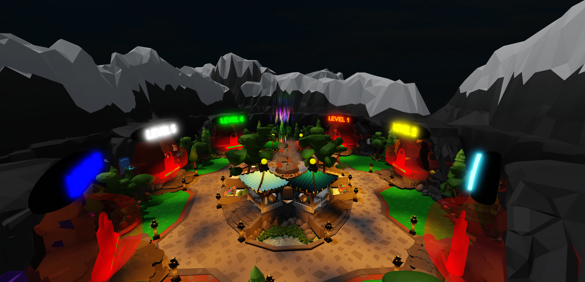

Cavern Crawlers
Game Link
https://www.roblox.com/games/13432835701/Cavern-Crawlers
Game Overview
As a player, you enter Cavern Crawlers starting at a level of 1 and a wooden pickaxe. You are first given the option to complete a tutorial and have immediate access to the first mine. With each block you mine, you gain experience and the respective block will drop at your feet for you to pick up and place in your inventory. All players have access to an interactive furnace allowing them to refine their valuable ores. Later in the game you gain access to higher level mines which have more precious ores and the introduction of rare gems. Gems can be refined by utilizing the the gem cutting table. After you collect precious resources you are able to sell them to the local shops and upgrade your tools for more effecient resource collection. If you so wish, there is a complete trophy room where you can spend your resources to upgrade a statue of a dragon showing off your achievements for all to see.
Tutorial
You are first introduced to Cavern Crawlers given the option to complete the tutorial. The tutorial begins by guiding you into the first mine followed by having you collect some resources. You are then shown how to navigate the map with the teleport system. You are introduced to the interactive furnace system to refine the resources you have collected. You are then guided to a few shops to sell your resources for in game currency, buy an upgrade to your tools, and to manage your items with the inventory system. At the end of the tutorial, you are given a generous reward of currency and items to get you started.
Clear Objective
Cavern Crawlers was designed to be a simple yet engaging game for all kinds of players. Using simple to understand mechanics and intuitive user interfaces, you are presented with a dynamic experience that allows you to play any way you please.
Progression System
Players begin cavern crawlers at level 1. For every resource and block you mine, you gain experience in order to access higher level mines. The xp system is exponential so as you play, the game continously gets harder providing you with more of a challenge. You also have the option of upgrading your tools and purchasing upgrades to your trophies enhancing your experience.
Purchasable Upgrades
Everyone has the option if they so wish to purchase special items for Robux. These items include a gemstone pick to skip the process of tool upgrades, a jetpack allowing you to more easily navigate the mines, and x-ray goggles which allow you to easily see through the boring stone to find more precious resources. You also have the option to purchase a variety of ore packs in case you find yourself in need of more resources.
Trophy Room
Evertime you join Cavern Crawlers, your trophy is displayed in the trophy room for all players to see. There are 10 different statue variations which change the appearance of the trophy as you continue to upgrade with the coveted gemstone dragon as the final achievement.
Perlin Noise Generation
Perlin noise generation was used to generate six unique mines each with distinguishing ore types of varying amounts dependent upon rarity. The generation begins with Perlin Worms being generated for each type of ore as well as larger blocks to generate the caves. An iterative loop then places blocks one row at a time to mitigate the chance of lag. A check is made each time a block is placed to determine if it is close to an ore or a cave block. The ore is then placed in that spot or not placed if a cave is detected. All the Perlin Worm blocks are then deleted and you are left with a fully generated mine!
Furnace
Players can use the furnace to refine all of the ores they have aquired through their journey. The UI is set up for ease of use and understanding. You can select which ore to place in the furnace or coal in the case of adding fuel. You then select the amount you would like to add and then hit start! That all it takes and soon you will have refined ingots which are even more valuable. The furnace can also be upgraded using the upgrades menu. This costs in game currency but is well worth it as you will find yourself with an abundance of resources as you progress. Gems can be cut to increase their value using the gem tables found around the map which share a similar UI as the furnace.

Shops
Local shops are places around the map for you to sell your valuable treasure for in game currency. This currency can then be spent on upgrading your equipment or your trophy. The shop interface is similar to the furnace and gem table interfaces to present you with an easy to use experience.

Inventory
Every player has their own inventory which they can use to store their items and change which tool they are using. You inventory has the special ability to know which of your tools is the most powerful so you never have to wonder if you are using the best tool available to you.